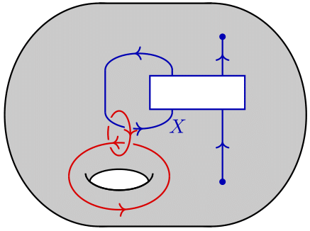

Publications
Preprints
Non-semisimple CFT/TFT correspondence I: General setup, with Ingo Runkel

Since the 1980s, it has been well known that there is a close relationship between two-dimensional conformal field theories and three-dimensional topological field theories.
This CFT/TFT correspondence provides a tractable example of holography as well as a first example of the symmetry TFT framework.
The Fuchs-Runkel-Schweigert construction is a mathematically precise incarnation of this correspondence and provides a rigorous construction of correlators for rational CFTs using 3D TFTs of Reshetikhin-Turaev type.
In this article we extend this ''TFT construction of CFT correlators'' to so-called finite logarithmic CFTs for which the algebraic input data is no longer semisimple but still finite. More specifically, starting from the data of a chiral CFT given in the form of a not necessarily semisimple modular tensor category we use a three dimensional topological field theory with surface defects based on the surgery TFT of De Renzi et al to construct a full CFT as a braided monoidal oplax natural transformation between a constant 2-functor and the full modular functor induced by the 3d TFT.
We make our construction explicit in the example of the transparent surface defect, resulting in the so-called Cardy case. In particular, we consider topological line defects and their action on bulk fields in these logarithmic CFTs, providing a source of examples for non-invertible and non-semisimple topological symmetries.
In this article we extend this ''TFT construction of CFT correlators'' to so-called finite logarithmic CFTs for which the algebraic input data is no longer semisimple but still finite. More specifically, starting from the data of a chiral CFT given in the form of a not necessarily semisimple modular tensor category we use a three dimensional topological field theory with surface defects based on the surgery TFT of De Renzi et al to construct a full CFT as a braided monoidal oplax natural transformation between a constant 2-functor and the full modular functor induced by the 3d TFT.
We make our construction explicit in the example of the transparent surface defect, resulting in the so-called Cardy case. In particular, we consider topological line defects and their action on bulk fields in these logarithmic CFTs, providing a source of examples for non-invertible and non-semisimple topological symmetries.
Simons Lectures on Categorical Symmetries, edited by Michele Del Zotto and Claudia Scheimbauer.
Lecture notes for the course ''Applied Cobordism Hypothesis'' given by David Jordan at the 2023 summer school on Categorical Symmetries in Quantum Field Theories at the Swiss Map Research Station in Les Diableret, written together with Jonte Gödicke and Anja Švraka.
Modular functors from non-semisimple 3d TFTs, with Ingo Runkel

Modular functors arise in the rigorous study of two-dimensional CFTs and are traditionally defined as systems of projective representations of mapping class groups
of surfaces that are compatible with the gluing of surfaces. There are several well-known constructions of modular functors. For example the holographic approach
via three-dimensional TFTs of Reshetikhin-Turaev type which uses a finite semisimple modular tensor category as input datum. In the 90ies Lyubashenko gave a
construction that no longer requires semisimplicity of the input category and recovers the RT-construction in the semisimple case.
It is thus natural to wonder if Lyubashenko's modular functor can be obtained from a three-dimensional TFT also in the non-semisimple case.
In this article we use the 3d TFTs constructed by De Renzi et al from a not necessarily semisimple modular tensor category C to answer this question affirmitively. To be a bit more precise we construct a modular functor as a symmetric monoidal 2-functor from a bordism 2-category to a 2-category of linear categories and show that the gluing morphisms coincide with the ones of Lyubashenko.
We also discuss how pulling back the modular functor for C to a 2-category of bordisms with orientation reversing involution cancels the gluing anomaly, and we relate this pullback to the modular functor for the Drinfeld center of C. Finally, we also discuss the connection to the 2-category of open-closed bordisms and the corresponding modular functors.
In this article we use the 3d TFTs constructed by De Renzi et al from a not necessarily semisimple modular tensor category C to answer this question affirmitively. To be a bit more precise we construct a modular functor as a symmetric monoidal 2-functor from a bordism 2-category to a 2-category of linear categories and show that the gluing morphisms coincide with the ones of Lyubashenko.
We also discuss how pulling back the modular functor for C to a 2-category of bordisms with orientation reversing involution cancels the gluing anomaly, and we relate this pullback to the modular functor for the Drinfeld center of C. Finally, we also discuss the connection to the 2-category of open-closed bordisms and the corresponding modular functors.
Doctoral thesis
Defects in non-semisimple 3d topological field theory and 2d logarithmic conformal field theory, University of Hamburg, 2025

In my doctoral thesis, I studied the connection between three-dimensional topological field theories (TFTs) and two-dimensional conformal field theories (CFTs).
The goal was to extend the "TFT construction of RCFT correlators'' of Fuchs, Runkel, Schweigert and others from rational to so-called finite logarithmic CFTs.
For these, the chiral data is encoded in a modular tensor category C, which is not necessarily semisimple, but still finite.
My first main result is the explicit construction of a 2-categorical version of Lyubashenko's modular functor in terms of the non-semisimple 3d TFT of De Renzi et al constructed from C.
I also extended this modular functor to a 2-category of "topological world sheets'' in order to incoporate boundary conditions and topological defects in the CFT.
Based on this, my second main result consists of an explicit construction of a full CFT, in the form of a braided monoidal oplax natural transformation, using surface defects in the non-semisimple 3d TFT.
As an example, I worked out the full CFT for the simplest surface defect, the transparent one, and show that our results match the expectations from the literature for the so-called diagonal or charge-conjugate CFT.
Master's thesis
TQFTs with additional structure, University of Vienna, 2022
In my Master's thesis I studied topological quantum field theories (TQFTs) with defects and tangential structures.
In the first part of this project, I focused on finding a suitable definition for a general n-dimensional bordism category
where all manifolds are stratified, and all strata come with a fixed type of tangential structure. In the second part,
I focused on the concrete case of 2-dimensional theories defined on bordisms with spin structures in more detail.
The main goal here was to construct a 2-category out of a given TQFT, which contains as much information about the TQFT
as possible. I found that such a construction indeed works, and the resulting 2-category comes equipped with a
2-endofunctor which squares to the identity. This 2-endofunctor has a topological origin as it comes from the
non-trivial deck transformation on the Spin bundles.